The main window of the package editor looks like this:
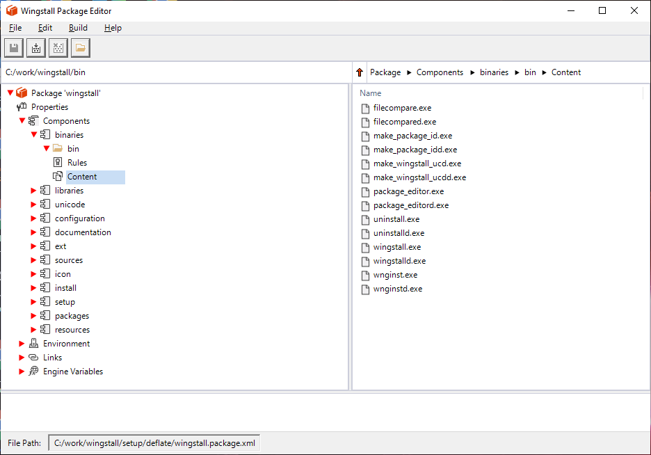New package can be created by selecting the File | New Package... menu item, and giving a name for the package.
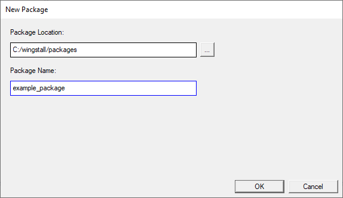By default packages are created under the C:\wingstall\packages directory.
The first thing to do is to set up the source root directory, that is the directory that contains the directories and files included in the package:
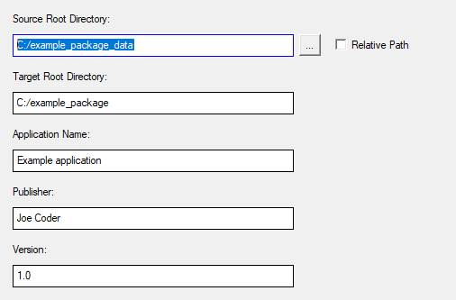The target root directory is the directory to which the directories and files contained in the package are installed by default. It can be changed by the user at installation time. The installation time value of the target root directory can be retrieved from the '$TARGET_ROOT_DIRECTORY$' engine variable.
By default the package is compressed using deflate compression algorithm.
The directories and files contained in the package are organized under one or more components. We have created one component and given it a name 'main':
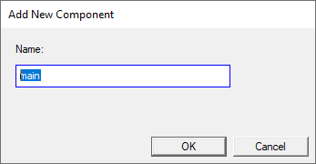Next the directories and files are added to the component:
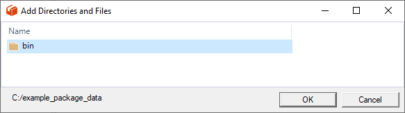We have added the bin directory.
By default all subdirectories and files contained by the component's directories are included in the package.
To exclude a file or directory an 'Exclude' rule has to be added. A rule can be added by right-clicking Rules and selecting 'Add New Rule', or by right-clicking a path in the Content view and selecting 'Exclude'.
The rules are processed top-down for each file and subdirectory and the last matching rule stays in effect.
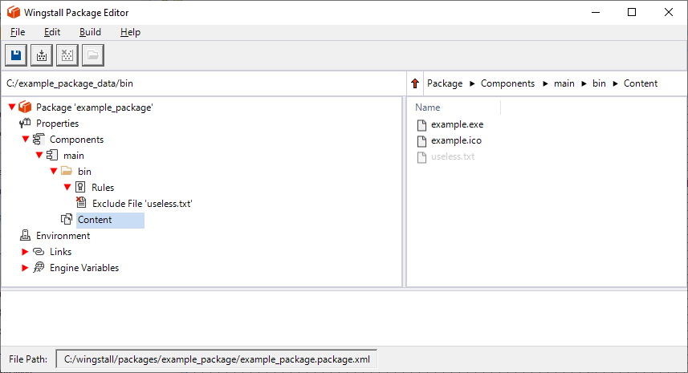We have excluded the 'useless.txt' file.
The Content view shows excluded files and directories in gray.
To create a folder for the application to the start menu, a new link directory can be added:
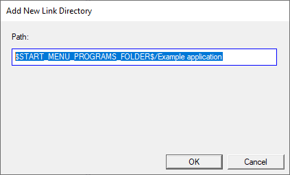To create a desktop shortcut for the application, a new shortcut can be added:
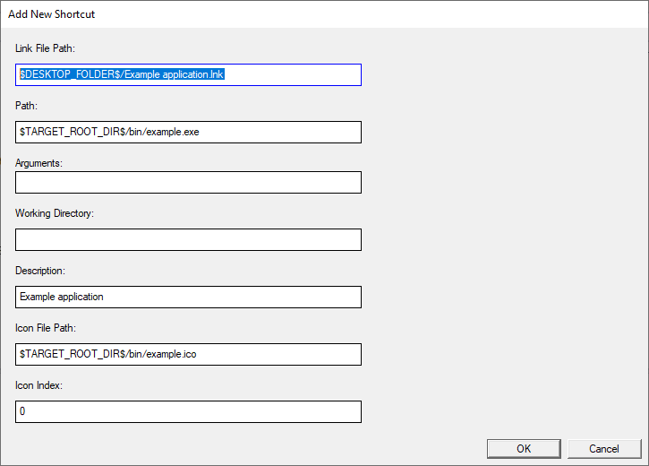'Arguments' are the arguments that the target program takes and the 'Working Directory' is the working directory that the target program is started to.
Engine variables view shows current example values of the engine variables. An engine variable can be used as path component by enclosing its name between two dollar signs: $TARGET_ROOT_DIR$, for example:
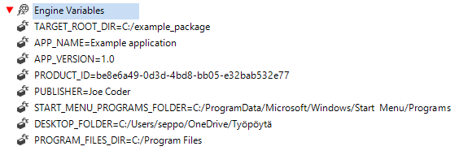The values of engine variables are not saved in the package. Their values are obtained at installation time.
The package can be built by selecting the 'Build | Build Package' menu item.
The build command creates a binary package file, and embeds the binary package in a Visual C++ setup program as a Windows resource. It then compiles the setup program using debug and release configurations. Finally the setup executables are copied to the 'bin' directory under the package directory.
The setup programs can be renamed to any executable file name. The setup should work the same.
The installer is started by running the setup.exe.
Because the installer writes to the registry under HKEY_LOCAL_MACHINE it requires administrator privileges, so Windows shows the UAC dialog. The installer window looks like this:
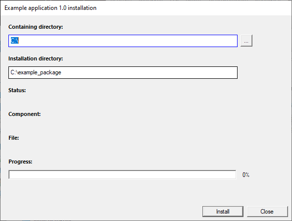Uninstallation can be started from the Windows Control Panel | Add/Remove Programs section, or by starting the uninstall.exe from the application installation directory.
The configuration can be changed by selecting the Edit | Configuration... menu item.
In order to successfully compile Wingstall-generated setup projects using Visual C++, the following parameters must be set:
The default values of these parameters are shown in the following picture:
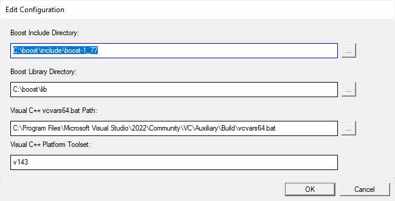The location of the vcvars64.bat can be found as follows: